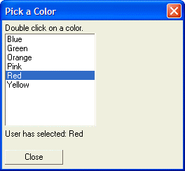
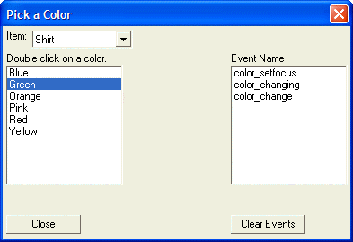
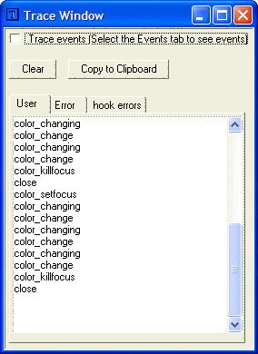

Trapping Other Events
In addition to trapping the change event, which fires when the value in a control changes, you can also trap other events, such as when a control gets and loses focus, or when a user double-clicks on an entry in a list box.
If you wish to trap more than just the change event for a control, you use the following syntax:
[control_definition!event_name_*] |
If you also want to make the control conditional, then the syntax is:
[control_definition!event_name_*?conditional_flag] |
When an event is generated, Alpha Anywhere will replace the '*' with the actual event name. For example, when the value in the control changes, an event called event_name_change is generated. When the control gets focus, an event called event_name_setfocus is generated.
Trapping the Double Click Event
For example, the following script creates a dialog with a list box. When the user double clicks on an entry in the list box, a message box pops up saying what the user selected. Also, when the user changes an entry in the list box, a static text control is updated to show what the user selected.
colors = "Red,Green,Blue,Yellow,Orange,Pink" colors = stritran(colors,",",crlf()) dim a_colors[10] as C a_colors.initialize(colors) a_colors.sort("ab") ui_dlg_box("Pick a Color",<<%dlg% Double click on a color.; [.25,10color_selected^#a_colors!color_*]; {text=50,1:txt}; {lf}; <15Close> %dlg%,<<%code% if a_dlg_button = "Close" then 'do nothing - the dialog will close else if a_dlg_button = "color_dblclick" then a_dlg_button = "" ui_msg_box("Notice","User picked: "+color_selected) else if a_dlg_button = "color_change" then a_dlg_button = "" txt = "User has selected: "+color_selected else a_dlg_button = "" end if %code%) |
This script creates this dialog:

Lesson 6: Event Name
In the above script, there is an event handler for the ' color_dblclick ' event, and the ' color_change ' event. The other events that are generated, such as the ' color_setfocus ', or ' color_killfocus ' events, are ignored.
Using the trace.writeln()command, you can inspect the names of the various events generated when a user interacts with a dialog box. For example, the following script writes the name of each event that is generated to the trace window. It also puts the event name in an array and displays the array on the dialog box:
dim events[100] as C colors = "Red,Green,Blue,Yellow,Orange,Pink" colors = stritran(colors,",",crlf()) item_selected = "Shirt" dim a_colors[10] as C a_colors.initialize(colors) a_colors.sort("ab") ui_dlg_box("Pick a Color",<<%dlg% Item: [.18item_selected^={Shirt,Tie,Pants,Jacket}!item_changed]; Double click on a color. |Event Name; [.25,10color_selected^#a_colors!color_*] |[.25,10^#events]; {text=50,1:txt}; {lf}; <15Close!close> |<15Clear Events!clear> %dlg%,<<%code% events[events.first_empty()] = a_dlg_button trace.writeln(a_dlg_button) if a_dlg_button = "Clear" events.clear() a_dlg_button = "" else if a_dlg_button = "Close" then 'do nothing - the dialog will close else a_dlg_button = "" end if %code%) |
The script produces this dialog. as you click on different values in the color list box, or select different items, an event is generated, and is added to the array which is displayed under the 'Event Name' label.

Lesson 6: Event Names
The events are also written to the Trace window, as shown below:

Next
Limitations
Desktop applications only